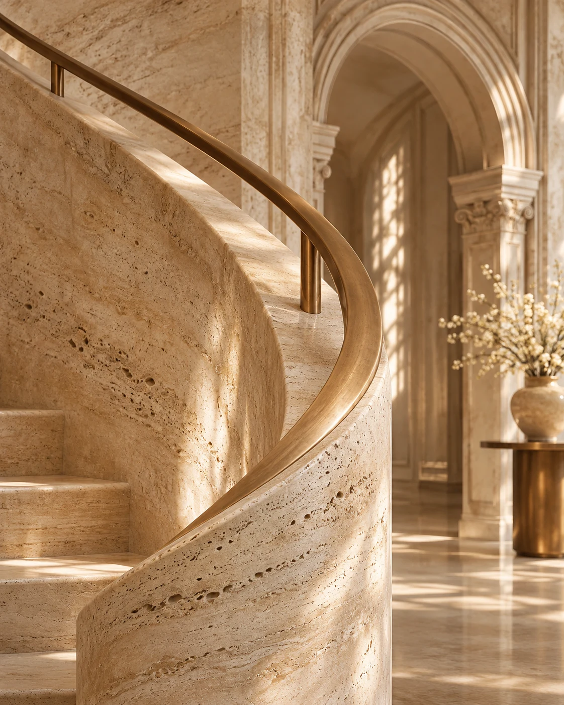
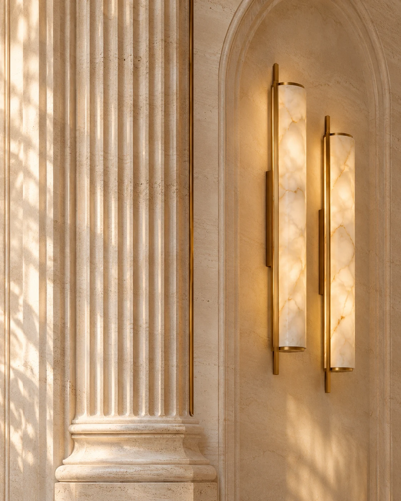
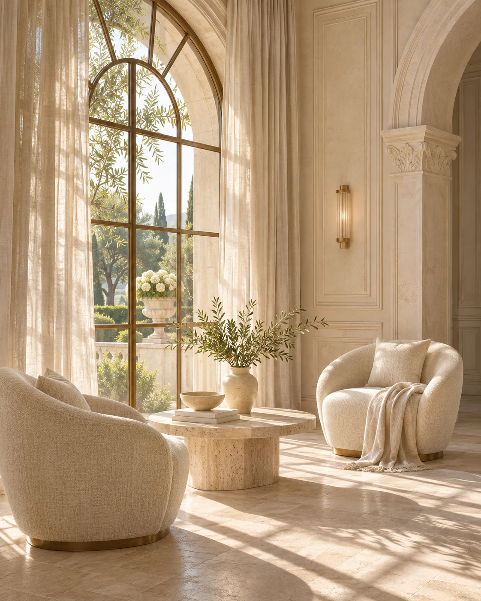

01 / الخامةحجر بحواف
حجر بحواف
ناعمة
انحناءة متصلة في الدرابزين، وملمس ظاهر في الحجر. يظلّ السطح غنيًّا بالتفاصيل من دون زخرفة إضافية.
- ملمس الحجر
- حافة معدنية


اقترب من الواجهة، ثم اعبر إلى الداخل.
 ٠٣ / البهو الكبير
٠٣ / البهو الكبير

سرير منخفض وأقمشة ناعمة، مع مساحة مفتوحة للحركة حوله.
حواف مستديرة ونسيج واضح.

حوض حجري وصنبور بلون النحاس. يبرز الضوء الجانبي ملمس المغسلة.
حوض بيضاوي وقاعدة مخدّدة.
تابع الخط من أعلى الزخرفة إلى أسفلها.
دراسة زخرفيةلقطات قريبة للخامات والإضاءة وتوزيع الجلسات في هذا التصوّر.

انحناءة متصلة في الدرابزين، وملمس ظاهر في الحجر. يظلّ السطح غنيًّا بالتفاصيل من دون زخرفة إضافية.

مصابيح طويلة بجوار عمود محفور. يكشف الضوء الجانبي عمق الحفر، وتفصل الخطوط المعدنية بين السطحين.

مقعدان حول طاولة منخفضة، قرب نافذة ممتدة. ترشّح الستائر الضوء وتترك الإطلالة مفتوحة.
صور تصوّرية مولّدة لدراسة التصميم.
بهو مركزي، وأجنحة تحيط به.
مرّر لترى توزيع المساحات.
تصوّر لقصر تتوزّع مساحاته حول البهو الكبير. اختر إحدى المساحات لاستكشاف تفاصيلها.
ارجع إلى أي مشهد من الفهرس، أو ابدأ الرحلة من السحاب.
ابدأ الرحلة من جديد ↗هذا النموذج دراسة في التصميم والحركة. جميع الصور مولّدة أو مرسومة، والقصر افتراضي، والمخطط تصوّري. لا تمثّل هذه التجربة عقارًا أو موقعًا أو مواصفات أو حالة توافر فعلية.
تبدأ الرحلة بين السحاب، ثم تعبر نافذة القصر إلى البهو الكبير، مرورًا بغرفة النوم والحمّام، وصولًا إلى الزخرفة وألبوم الخامات والإضاءة، وتُختتم بتحوّل المخطط المسطّح إلى مجسّم معماري. استخدم فهرس الرحلة للانتقال مباشرة إلى أي مشهد. ويمكنك تقليل الحركة من أسفل الشاشة.